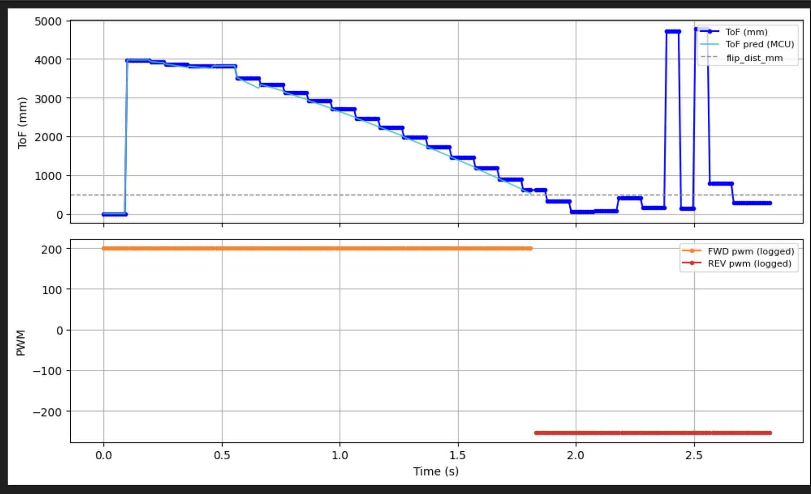
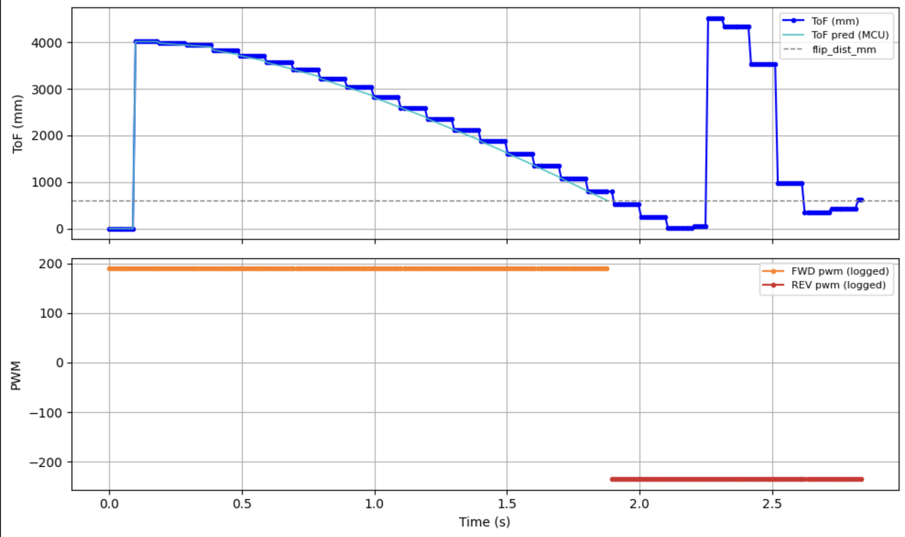

Lab 8: Stunts!
Overview
This lab implements a BLE-triggered flip maneuver using ToF sensing. The robot drives toward a wall, predicts distance using linear extrapolation, triggers a direction reversal before the raw reading reaches the setpoint, and logs all data onboard for post-run visualization. Logged signals include raw distance, predicted distance, PWM, and phase.
Notebook Run
The notebook handles three steps: send parameters, execute the flip, then fetch logged data. Parameters are
packed into a pipe-delimited string matching the seven-field FLIP_START payload: approach PWM,
reverse PWM, pause time, control period (ms), flip distance (mm), max approach time (ms), and reverse
duration (ms).
Payload formatting:
def build_flip_payload(
approach_pwm,
reverse_pwm,
pause_time,
poll_time_ms,
flip_dist_mm,
approach_max_ms,
reverse_ms,
):
return f"{approach_pwm}|{reverse_pwm}|{pause_time}|{poll_time_ms}|{flip_dist_mm}|{approach_max_ms}|{reverse_ms}"
After the maneuver completes, the notebook requests logged data via FLIP_GET_DATA. The
notification handler parses each FLIP:... line into arrays for time, raw distance, phase,
PWM, and predicted distance.
Notification handler:
def flip_handler(uuid, byte_array):
raw = ble.bytearray_to_string(byte_array).strip()
if not raw.startswith("FLIP:"):
return
try:
parts = raw[5:].split(",")
if len(parts) >= 4:
time_ms.append(int(parts[0].strip()))
raw_mm.append(int(parts[1].strip()))
phase.append(int(parts[2].strip()))
pwm.append(int(parts[3].strip()))
if len(parts) >= 5:
pred_mm.append(int(parts[4].strip()))
else:
pred_mm.append(int(parts[1].strip()))
except (ValueError, IndexError) as e:
print("FLIP parse error:", raw[:80], e)Firmware Behavior
The FLIP_START command in ble_arduino.ino reads the payload values and initializes
ToF in long-range mode. The maneuver runs in two phases:
1. Approach
Motors drive forward at approach_pwm. ToF is polled continuously and the prediction model
updates on each valid reading. The phase exits when predicted distance drops to flip_dist_mm,
or when the approach timer expires. Data is logged every loop iteration.
2. Reverse
Triggered only if the prediction condition is met. The motor direction pins are flipped and PWM is set to
reverse_pwm. Logging continues with negative PWM values.
FLIP_START command handler:
case FLIP_START: {
int approach_pwm = 130;
int reverse_pwm = 130;
int pause_time = 100;
int poll_time_ms = 10;
int flip_dist_mm = 320;
int approach_max_ms = 5000;
int reverse_ms = 2000;
if (!robot_cmd.get_next_value(approach_pwm)) break;
if (!robot_cmd.get_next_value(reverse_pwm)) break;
if (!robot_cmd.get_next_value(pause_time)) break;
if (!robot_cmd.get_next_value(poll_time_ms)) break;
if (!robot_cmd.get_next_value(flip_dist_mm)) break;
if (!robot_cmd.get_next_value(approach_max_ms)) break;
if (!robot_cmd.get_next_value(reverse_ms)) break;
SFEVL53L1X *tof = use_sensor2 ? &distanceSensor2 : &distanceSensor1;
tof->setDistanceModeLong();
tof->startRanging();
// Approach: reverse pins low, forward pins at approach PWM
analogWrite(L_REVERSE, 0);
analogWrite(R_REVERSE, 0);
analogWrite(L_PWM, approach_pwm);
analogWrite(R_PWM, approach_pwm);
bool triggered = false;
unsigned long t0 = millis();
while ((millis() - t0) < (unsigned long)approach_max_ms) {
BLE.poll();
unsigned long now = millis();
if (tof->checkForDataReady()) {
int raw = tof->getDistance();
update_anchor(raw, now, last_raw, has_anchor,
anchor_dist, anchor_time, velocity);
}
if (has_anchor) {
float pred = predict_distance(now, last_raw, has_anchor,
anchor_dist, anchor_time, velocity);
if (pred <= (float)flip_dist_mm) {
triggered = true;
break;
}
}
// log: time, raw mm, phase, signed pwm, predicted mm
delay((unsigned long)poll_time_ms);
}
// ... reverse phase follows if triggered ...
}FLIP_GET_DATA
Each stored sample is streamed back over BLE as a single string per line:
case FLIP_GET_DATA: {
for (int i = 0; i < log_count; i++) {
tx_estring_value.clear();
tx_estring_value.append("FLIP:");
tx_estring_value.append(log_time[i]);
tx_estring_value.append(",");
tx_estring_value.append(log_raw[i]);
tx_estring_value.append(",");
tx_estring_value.append(log_phase[i]);
tx_estring_value.append(",");
tx_estring_value.append(log_pwm[i]);
tx_estring_value.append(",");
tx_estring_value.append(log_pred[i]);
tx_characteristic_string.writeValue(tx_estring_value.c_str());
delay(10);
}
break;
}Linear Extrapolation Model
Rather than reacting only to raw ToF updates, the controller predicts distance between sensor readings. Velocity is computed only when the measured distance actually changes. Repeated identical ToF values are ignored and only genuinely new readings update velocity. The anchor stores the last valid (distance, time) pair. If no anchor exists yet, prediction falls back to the raw reading.
This matters because the control loop runs much faster than the ToF update rate. Without prediction, the robot would only know it crossed the setpoint after the next sensor reading arrives, by which time it may already be too close. With extrapolation, the controller anticipates the crossing and triggers the reversal earlier.
Distinct-anchor velocity update:
static void update_anchor(int raw_mm, unsigned long now_ms,
int &last_raw, bool &has_anchor,
int &anchor_dist, unsigned long &anchor_time,
float &velocity) {
last_raw = raw_mm;
if (!has_anchor) {
anchor_dist = raw_mm;
anchor_time = now_ms;
has_anchor = true;
velocity = 0.0f;
return;
}
// ignore repeated identical readings
if (raw_mm == anchor_dist) return;
int prev_dist = anchor_dist;
unsigned long prev_time = anchor_time;
anchor_dist = raw_mm;
anchor_time = now_ms;
unsigned long dt = anchor_time - prev_time;
if (dt > 0) {
velocity = ((float)(anchor_dist - prev_dist)) / (float)dt;
}
}Predicted distance from the current anchor:
// d̂(t) = anchor_dist + velocity * (t - anchor_time)
static float predict_distance(unsigned long now_ms, int last_raw,
bool has_anchor, int anchor_dist,
unsigned long anchor_time, float velocity) {
if (!has_anchor) return (float)last_raw;
float elapsed = (float)(now_ms - anchor_time);
return (float)anchor_dist + velocity * elapsed;
}Results
Logged data is converted to seconds and plotted in two subplots. Raw ToF shows step-like behavior due to the sensor update rate, while predicted distance is smooth and continuous. The setpoint is shown as a horizontal reference. Prediction typically crosses the setpoint before the raw data does, confirming that the reversal fires earlier than it would with raw-only sensing. Positive PWM corresponds to forward motion, negative to reverse, with a clear transition at the prediction trigger point.


Demonstration
Discussion
Unfortunately, the left motor gearbox jammed after these two demonstrations, preventing further testing. As a result, I was unable to capture additional runs with a straighter trajectory.
The flip is triggered using predicted distance rather than raw ToF. This reduces the delay caused by sensor sampling and improves timing of the reversal. The distinct-anchor method prevents velocity from being corrupted by repeated identical ToF readings, keeping the prediction stable and avoiding zero-velocity artifacts.
The result is a clean transition from approach to reverse before the robot reaches the wall, demonstrating effective feedforward-style behavior with a simple linear model. The approach is lightweight, runs entirely onboard, and integrates cleanly with the existing BLE logging pipeline.